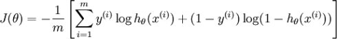
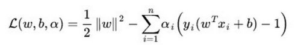
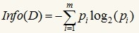
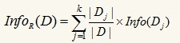
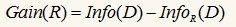
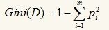

<!doctype html>
<html class="no-js" lang="en">
  <head>
    <meta charset="utf-8" />
    <meta name="viewport" content="width=device-width, initial-scale=1.0" />
    <title>
    
  编程算法面试指南 - 小土刀的笔记
  
  </title>
 <meta name="description" content="">
 <link href="atom.xml" rel="alternate" title="小土刀的笔记" type="application/atom+xml">
    <link rel="stylesheet" href="asset/css/foundation.min.css" />
    <link rel="stylesheet" href="asset/css/docs.css" />

    <script src="asset/js/vendor/modernizr.js"></script>
    <script src="asset/js/vendor/jquery.js"></script>
    <script src="asset/highlightjs/highlight.pack.js"></script>
    <link href="asset/highlightjs/styles/github.css" media="screen, projection" rel="stylesheet" type="text/css">
    <script>hljs.initHighlightingOnLoad();</script>
    
  </head>
  <body class="antialiased hide-extras">
    
    <div class="marketing off-canvas-wrap" data-offcanvas>
      <div class="inner-wrap">


<nav class="top-bar docs-bar hide-for-small" data-topbar>

<div id="header">
    <h1><a href="index.html">小土刀的笔记</a></h1>
</div>

</nav>
        <nav class="tab-bar show-for-small">
  <a href="javascript:void(0)" class="left-off-canvas-toggle menu-icon">
    <span> &nbsp; 小土刀的笔记</span>
  </a>
</nav>

<aside class="left-off-canvas-menu">
      <ul class="off-canvas-list">
      <li><a href="index.html">Home</a></li>
      
        <li class="divider"></li>
        <li><label>清单</label></li>

          
            <li><a title="好问题收集" href="14520379720179.html">好问题收集</a></li>
          
            <li><a title="书单合集" href="14520379720136.html">书单合集</a></li>
          
            <li><a title="日志列表" href="14520379720098.html">日志列表</a></li>
          
            <li><a title="玩物列表" href="14520379720223.html">玩物列表</a></li>
          

      
        <li class="divider"></li>
        <li><label>Research</label></li>

          
            <li><a title="编程算法面试指南" href="14523493109485.html">编程算法面试指南</a></li>
          
            <li><a title="机器学习知识点" href="14525635161294.html">机器学习知识点</a></li>
          
            <li><a title="机器学习指南" href="14522640452315.html">机器学习指南</a></li>
          
            <li><a title="推荐系统沉思录" href="14520495721664.html">推荐系统沉思录</a></li>
          
            <li><a title="知识图谱沉思录" href="14520583101537.html">知识图谱沉思录</a></li>
          
            <li><a title="计算机视觉沉思录" href="14520483585854.html">计算机视觉沉思录</a></li>
          
            <li><a title="数据分析沉思录" href="14520494829635.html">数据分析沉思录</a></li>
          
            <li><a title="机器学习沉思录" href="14520493984651.html">机器学习沉思录</a></li>
          
            <li><a title="3D 打印沉思录" href="14520902603411.html">3D 打印沉思录</a></li>
          
            <li><a title="HMM 指南" href="14520495021796.html">HMM 指南</a></li>
          
            <li><a title="EM / GMM 指南" href="14520494287936.html">EM / GMM 指南</a></li>
          

      
        <li class="divider"></li>
        <li><label>互联网观察</label></li>

          
            <li><a title="下一个浪潮" href="14520916865512.html">下一个浪潮</a></li>
          
            <li><a title="聊聊架构 合集" href="14524806556720.html">聊聊架构 合集</a></li>
          
            <li><a title="caoz 的梦呓 合集" href="14521293183083.html">caoz 的梦呓 合集</a></li>
          
            <li><a title="余晟以为 合集" href="14521295493939.html">余晟以为 合集</a></li>
          
            <li><a title="TimYang 合集" href="14521295493764.html">TimYang 合集</a></li>
          
            <li><a title="技术创业空间 合集" href="14521295493592.html">技术创业空间 合集</a></li>
          
            <li><a title="肉饼铺子 合集" href="14521295493419.html">肉饼铺子 合集</a></li>
          
            <li><a title="老鹰说 合集" href="14521295493234.html">老鹰说 合集</a></li>
          
            <li><a title="歪理邪说 霍炬 合集" href="14521295493069.html">歪理邪说 霍炬 合集</a></li>
          
            <li><a title="赤潮 合集" href="14521212163322.html">赤潮 合集</a></li>
          
            <li><a title="小道消息 合集" href="14521293183220.html">小道消息 合集</a></li>
          
            <li><a title="互联网黑市分析" href="14521211393822.html">互联网黑市分析</a></li>
          
            <li><a title="2015 盘点" href="14521201842182.html">2015 盘点</a></li>
          
            <li><a title="互联网深度报告" href="14520916865595.html">互联网深度报告</a></li>
          
            <li><a title="另一种思考" href="14520915163900.html">另一种思考</a></li>
          
            <li><a title="2015智能可穿戴市场白皮书" href="14520916610687.html">2015智能可穿戴市场白皮书</a></li>
          
            <li><a title="2015 Mac 中国市场报告" href="14520916610610.html">2015 Mac 中国市场报告</a></li>
          
            <li><a title="网飞传奇：从电影租赁店到在线视频新巨头的历程揭秘" href="14520915164462.html">网飞传奇：从电影租赁店到在线视频新巨头的历程揭秘</a></li>
          
            <li><a title="混合现实" href="14520915164225.html">混合现实</a></li>
          
            <li><a title="来自杂志的经验与趋势" href="14520916865429.html">来自杂志的经验与趋势</a></li>
          

      
        <li class="divider"></li>
        <li><label>工具平台</label></li>

          
            <li><a title="Mac 指南" href="14520959875185.html">Mac 指南</a></li>
          
            <li><a title="Bash 指南" href="14520940884566.html">Bash 指南</a></li>
          
            <li><a title="Hexo 指南" href="14520953748408.html">Hexo 指南</a></li>
          
            <li><a title="VS Code 指南" href="14520964818956.html">VS Code 指南</a></li>
          
            <li><a title="Homebrew 指南" href="14520954251052.html">Homebrew 指南</a></li>
          
            <li><a title="Hadoop 指南" href="14521186972719.html">Hadoop 指南</a></li>
          
            <li><a title="Pandoc 指南" href="14520962259349.html">Pandoc 指南</a></li>
          
            <li><a title="聊聊 PPT" href="14521293989573.html">聊聊 PPT</a></li>
          
            <li><a title="Vim 指南" href="14520964365928.html">Vim 指南</a></li>
          
            <li><a title="Sublime 指南" href="14520965272426.html">Sublime 指南</a></li>
          
            <li><a title="GFW 原理指南" href="14521185605970.html">GFW 原理指南</a></li>
          
            <li><a title="Linux 的概念与体系" href="14521103801032.html">Linux 的概念与体系</a></li>
          
            <li><a title="Appstore 生存指南" href="14521185605800.html">Appstore 生存指南</a></li>
          
            <li><a title="Latex 指南" href="14520955052445.html">Latex 指南</a></li>
          
            <li><a title="Git 指南" href="14520951022304.html">Git 指南</a></li>
          
            <li><a title="SVN 指南" href="14521379903411.html">SVN 指南</a></li>
          
            <li><a title="Github 生活指南" href="14520951022388.html">Github 生活指南</a></li>
          
            <li><a title="iTerm2 指南" href="14520954757815.html">iTerm2 指南</a></li>
          
            <li><a title="Ubuntu 指南" href="14520961679182.html">Ubuntu 指南</a></li>
          
            <li><a title="谷歌搜索技巧" href="14520951022464.html">谷歌搜索技巧</a></li>
          
            <li><a title="Make 指南" href="14520961098604.html">Make 指南</a></li>
          
            <li><a title="GCC 简易指南" href="14520948089088.html">GCC 简易指南</a></li>
          
            <li><a title="Kinect 开发指南" href="14521185098750.html">Kinect 开发指南</a></li>
          
            <li><a title="fish shell 指南" href="14520943310829.html">fish shell 指南</a></li>
          
            <li><a title="Gradle 指南" href="14520951022555.html">Gradle 指南</a></li>
          

      
        <li class="divider"></li>
        <li><label>计算机学科经典</label></li>

          
            <li><a title="大教堂与集市" href="14520876353363.html">大教堂与集市</a></li>
          
            <li><a title="深入理解计算机系统" href="14520855371865.html">深入理解计算机系统</a></li>
          
            <li><a title="Python Algorithm" href="14521091296885.html">Python Algorithm</a></li>
          
            <li><a title="程序员的思维修炼" href="14520875018555.html">程序员的思维修炼</a></li>
          
            <li><a title="程序员修炼之道" href="14520874386531.html">程序员修炼之道</a></li>
          
            <li><a title="高效程序员的45个习惯" href="14520878121031.html">高效程序员的45个习惯</a></li>
          
            <li><a title="代码大全" href="14520855371782.html">代码大全</a></li>
          
            <li><a title="编程珠玑" href="14521308341315.html">编程珠玑</a></li>
          
            <li><a title="编写可读代码的艺术" href="14520874726715.html">编写可读代码的艺术</a></li>
          
            <li><a title="移动应用UI设计模式" href="14520886280669.html">移动应用UI设计模式</a></li>
          
            <li><a title="启示录：打造用户喜爱的产品" href="14520907410466.html">启示录：打造用户喜爱的产品</a></li>
          
            <li><a title="亲爱的界面：让用户乐于使用、爱不释手" href="14520885573483.html">亲爱的界面：让用户乐于使用、爱不释手</a></li>
          
            <li><a title="简约之美：软件设计之道" href="14520879229686.html">简约之美：软件设计之道</a></li>
          
            <li><a title="简单之美：软件开发实践者的思考" href="14520878623936.html">简单之美：软件开发实践者的思考</a></li>
          
            <li><a title="构建之法：现代软件工程" href="14520880342127.html">构建之法：现代软件工程</a></li>
          
            <li><a title="软件项目成功之道" href="14520883368873.html">软件项目成功之道</a></li>
          

      
        <li class="divider"></li>
        <li><label>iOS</label></li>

          
            <li><a title="iOS 学习路径" href="14520467690026.html">iOS 学习路径</a></li>
          
            <li><a title="iOS 面试相关" href="14520467689968.html">iOS 面试相关</a></li>
          

      
        <li class="divider"></li>
        <li><label>游戏</label></li>

          
            <li><a title="深入游戏" href="14521282739436.html">深入游戏</a></li>
          
            <li><a title="游戏设计" href="14521282739338.html">游戏设计</a></li>
          
            <li><a title="英雄联盟游戏设计与运营技巧" href="14521282739242.html">英雄联盟游戏设计与运营技巧</a></li>
          
            <li><a title="游戏运营指南" href="14521282739132.html">游戏运营指南</a></li>
          
            <li><a title="游戏的架构与细节梳理" href="14521282739025.html">游戏的架构与细节梳理</a></li>
          
            <li><a title="Destiny 游戏分析" href="14521282738926.html">Destiny 游戏分析</a></li>
          
            <li><a title="辐射避难所" href="14521277966471.html">辐射避难所</a></li>
          
            <li><a title="英雄联盟攻略" href="14521196095413.html">英雄联盟攻略</a></li>
          
            <li><a title="游戏产业信息收集" href="14521195111050.html">游戏产业信息收集</a></li>
          
            <li><a title="游戏发展史" href="14521194839446.html">游戏发展史</a></li>
          
            <li><a title="辐射系列" href="14521194076173.html">辐射系列</a></li>
          

      
        <li class="divider"></li>
        <li><label>生活品质</label></li>

          
            <li><a title="成为作家" href="14521287232350.html">成为作家</a></li>
          
            <li><a title="广州美食地图" href="14521207453879.html">广州美食地图</a></li>
          
            <li><a title="聊聊钢笔" href="14521202963339.html">聊聊钢笔</a></li>
          
            <li><a title="聊聊电影" href="14521201092159.html">聊聊电影</a></li>
          

      
        <li class="divider"></li>
        <li><label>生活技巧</label></li>

          
            <li><a title="留学菜谱" href="14526190508593.html">留学菜谱</a></li>
          
            <li><a title="烤箱指南" href="14521207693233.html">烤箱指南</a></li>
          
            <li><a title="租房手册" href="14521200170697.html">租房手册</a></li>
          
            <li><a title="买车指南" href="14521200170757.html">买车指南</a></li>
          
            <li><a title="北美二手车购买指南" href="14521200391261.html">北美二手车购买指南</a></li>
          

      
        <li class="divider"></li>
        <li><label>编程语言</label></li>

          
            <li><a title="如何选择编程语言" href="14521020035250.html">如何选择编程语言</a></li>
          
            <li><a title="Python 学习指南" href="14521095530236.html">Python 学习指南</a></li>
          
            <li><a title="Python 编程思想" href="14521096832549.html">Python 编程思想</a></li>
          
            <li><a title="Java 精要" href="14521089938127.html">Java 精要</a></li>
          
            <li><a title="Matlab 指南" href="14521020962952.html">Matlab 指南</a></li>
          
            <li><a title="OpenMP 入门指南" href="14521021178707.html">OpenMP 入门指南</a></li>
          
            <li><a title="Javascript 学习指南" href="14521020732534.html">Javascript 学习指南</a></li>
          
            <li><a title="C++ 学习笔记" href="14520969294593.html">C++ 学习笔记</a></li>
          
            <li><a title="SQL 入门指南" href="14521021831775.html">SQL 入门指南</a></li>
          
            <li><a title="CUDA架构" href="14521020248399.html">CUDA架构</a></li>
          

      
        <li class="divider"></li>
        <li><label>Android</label></li>

          
            <li><a title="Android Studio 指南" href="14520922857884.html">Android Studio 指南</a></li>
          
            <li><a title="Google Map V2 使用指南" href="14520474070782.html">Google Map V2 使用指南</a></li>
          
            <li><a title="ActionBar 使用指南" href="14520474070736.html">ActionBar 使用指南</a></li>
          

      
        <li class="divider"></li>
        <li><label>Web</label></li>

          
            <li><a title="网络协议指南" href="14520476779491.html">网络协议指南</a></li>
          
            <li><a title="Node.js 命令行程序实例" href="14520476779456.html">Node.js 命令行程序实例</a></li>
          
            <li><a title="Flask Study Note" href="14520476779406.html">Flask Study Note</a></li>
          

      
        <li class="divider"></li>
        <li><label>关于</label></li>

          
            <li><a title="版权声明" href="14520576386063.html">版权声明</a></li>
          

      
      </ul>
    </aside>

<a class="exit-off-canvas" href="#"></a>

        <section id="main-content" role="main" class="scroll-container">

          <div class="row">
            <div class="large-3 medium-3 columns">
              <div class="hide-for-small">
                <div class="sidebar">
                <nav>
                  <ul id="side-nav" class="side-nav">

                    
                      <li class="side-title"><span>清单</span></li>
                        
                          <li><a title="好问题收集" href="14520379720179.html">好问题收集</a></li>
                        
                          <li><a title="书单合集" href="14520379720136.html">书单合集</a></li>
                        
                          <li><a title="日志列表" href="14520379720098.html">日志列表</a></li>
                        
                          <li><a title="玩物列表" href="14520379720223.html">玩物列表</a></li>
                        

                    
                      <li class="side-title"><span>Research</span></li>
                        
                          <li><a title="编程算法面试指南" href="14523493109485.html">编程算法面试指南</a></li>
                        
                          <li><a title="机器学习知识点" href="14525635161294.html">机器学习知识点</a></li>
                        
                          <li><a title="机器学习指南" href="14522640452315.html">机器学习指南</a></li>
                        
                          <li><a title="推荐系统沉思录" href="14520495721664.html">推荐系统沉思录</a></li>
                        
                          <li><a title="知识图谱沉思录" href="14520583101537.html">知识图谱沉思录</a></li>
                        
                          <li><a title="计算机视觉沉思录" href="14520483585854.html">计算机视觉沉思录</a></li>
                        
                          <li><a title="数据分析沉思录" href="14520494829635.html">数据分析沉思录</a></li>
                        
                          <li><a title="机器学习沉思录" href="14520493984651.html">机器学习沉思录</a></li>
                        
                          <li><a title="3D 打印沉思录" href="14520902603411.html">3D 打印沉思录</a></li>
                        
                          <li><a title="HMM 指南" href="14520495021796.html">HMM 指南</a></li>
                        
                          <li><a title="EM / GMM 指南" href="14520494287936.html">EM / GMM 指南</a></li>
                        

                    
                      <li class="side-title"><span>互联网观察</span></li>
                        
                          <li><a title="下一个浪潮" href="14520916865512.html">下一个浪潮</a></li>
                        
                          <li><a title="聊聊架构 合集" href="14524806556720.html">聊聊架构 合集</a></li>
                        
                          <li><a title="caoz 的梦呓 合集" href="14521293183083.html">caoz 的梦呓 合集</a></li>
                        
                          <li><a title="余晟以为 合集" href="14521295493939.html">余晟以为 合集</a></li>
                        
                          <li><a title="TimYang 合集" href="14521295493764.html">TimYang 合集</a></li>
                        
                          <li><a title="技术创业空间 合集" href="14521295493592.html">技术创业空间 合集</a></li>
                        
                          <li><a title="肉饼铺子 合集" href="14521295493419.html">肉饼铺子 合集</a></li>
                        
                          <li><a title="老鹰说 合集" href="14521295493234.html">老鹰说 合集</a></li>
                        
                          <li><a title="歪理邪说 霍炬 合集" href="14521295493069.html">歪理邪说 霍炬 合集</a></li>
                        
                          <li><a title="赤潮 合集" href="14521212163322.html">赤潮 合集</a></li>
                        
                          <li><a title="小道消息 合集" href="14521293183220.html">小道消息 合集</a></li>
                        
                          <li><a title="互联网黑市分析" href="14521211393822.html">互联网黑市分析</a></li>
                        
                          <li><a title="2015 盘点" href="14521201842182.html">2015 盘点</a></li>
                        
                          <li><a title="互联网深度报告" href="14520916865595.html">互联网深度报告</a></li>
                        
                          <li><a title="另一种思考" href="14520915163900.html">另一种思考</a></li>
                        
                          <li><a title="2015智能可穿戴市场白皮书" href="14520916610687.html">2015智能可穿戴市场白皮书</a></li>
                        
                          <li><a title="2015 Mac 中国市场报告" href="14520916610610.html">2015 Mac 中国市场报告</a></li>
                        
                          <li><a title="网飞传奇：从电影租赁店到在线视频新巨头的历程揭秘" href="14520915164462.html">网飞传奇：从电影租赁店到在线视频新巨头的历程揭秘</a></li>
                        
                          <li><a title="混合现实" href="14520915164225.html">混合现实</a></li>
                        
                          <li><a title="来自杂志的经验与趋势" href="14520916865429.html">来自杂志的经验与趋势</a></li>
                        

                    
                      <li class="side-title"><span>工具平台</span></li>
                        
                          <li><a title="Mac 指南" href="14520959875185.html">Mac 指南</a></li>
                        
                          <li><a title="Bash 指南" href="14520940884566.html">Bash 指南</a></li>
                        
                          <li><a title="Hexo 指南" href="14520953748408.html">Hexo 指南</a></li>
                        
                          <li><a title="VS Code 指南" href="14520964818956.html">VS Code 指南</a></li>
                        
                          <li><a title="Homebrew 指南" href="14520954251052.html">Homebrew 指南</a></li>
                        
                          <li><a title="Hadoop 指南" href="14521186972719.html">Hadoop 指南</a></li>
                        
                          <li><a title="Pandoc 指南" href="14520962259349.html">Pandoc 指南</a></li>
                        
                          <li><a title="聊聊 PPT" href="14521293989573.html">聊聊 PPT</a></li>
                        
                          <li><a title="Vim 指南" href="14520964365928.html">Vim 指南</a></li>
                        
                          <li><a title="Sublime 指南" href="14520965272426.html">Sublime 指南</a></li>
                        
                          <li><a title="GFW 原理指南" href="14521185605970.html">GFW 原理指南</a></li>
                        
                          <li><a title="Linux 的概念与体系" href="14521103801032.html">Linux 的概念与体系</a></li>
                        
                          <li><a title="Appstore 生存指南" href="14521185605800.html">Appstore 生存指南</a></li>
                        
                          <li><a title="Latex 指南" href="14520955052445.html">Latex 指南</a></li>
                        
                          <li><a title="Git 指南" href="14520951022304.html">Git 指南</a></li>
                        
                          <li><a title="SVN 指南" href="14521379903411.html">SVN 指南</a></li>
                        
                          <li><a title="Github 生活指南" href="14520951022388.html">Github 生活指南</a></li>
                        
                          <li><a title="iTerm2 指南" href="14520954757815.html">iTerm2 指南</a></li>
                        
                          <li><a title="Ubuntu 指南" href="14520961679182.html">Ubuntu 指南</a></li>
                        
                          <li><a title="谷歌搜索技巧" href="14520951022464.html">谷歌搜索技巧</a></li>
                        
                          <li><a title="Make 指南" href="14520961098604.html">Make 指南</a></li>
                        
                          <li><a title="GCC 简易指南" href="14520948089088.html">GCC 简易指南</a></li>
                        
                          <li><a title="Kinect 开发指南" href="14521185098750.html">Kinect 开发指南</a></li>
                        
                          <li><a title="fish shell 指南" href="14520943310829.html">fish shell 指南</a></li>
                        
                          <li><a title="Gradle 指南" href="14520951022555.html">Gradle 指南</a></li>
                        

                    
                      <li class="side-title"><span>计算机学科经典</span></li>
                        
                          <li><a title="大教堂与集市" href="14520876353363.html">大教堂与集市</a></li>
                        
                          <li><a title="深入理解计算机系统" href="14520855371865.html">深入理解计算机系统</a></li>
                        
                          <li><a title="Python Algorithm" href="14521091296885.html">Python Algorithm</a></li>
                        
                          <li><a title="程序员的思维修炼" href="14520875018555.html">程序员的思维修炼</a></li>
                        
                          <li><a title="程序员修炼之道" href="14520874386531.html">程序员修炼之道</a></li>
                        
                          <li><a title="高效程序员的45个习惯" href="14520878121031.html">高效程序员的45个习惯</a></li>
                        
                          <li><a title="代码大全" href="14520855371782.html">代码大全</a></li>
                        
                          <li><a title="编程珠玑" href="14521308341315.html">编程珠玑</a></li>
                        
                          <li><a title="编写可读代码的艺术" href="14520874726715.html">编写可读代码的艺术</a></li>
                        
                          <li><a title="移动应用UI设计模式" href="14520886280669.html">移动应用UI设计模式</a></li>
                        
                          <li><a title="启示录：打造用户喜爱的产品" href="14520907410466.html">启示录：打造用户喜爱的产品</a></li>
                        
                          <li><a title="亲爱的界面：让用户乐于使用、爱不释手" href="14520885573483.html">亲爱的界面：让用户乐于使用、爱不释手</a></li>
                        
                          <li><a title="简约之美：软件设计之道" href="14520879229686.html">简约之美：软件设计之道</a></li>
                        
                          <li><a title="简单之美：软件开发实践者的思考" href="14520878623936.html">简单之美：软件开发实践者的思考</a></li>
                        
                          <li><a title="构建之法：现代软件工程" href="14520880342127.html">构建之法：现代软件工程</a></li>
                        
                          <li><a title="软件项目成功之道" href="14520883368873.html">软件项目成功之道</a></li>
                        

                    
                      <li class="side-title"><span>iOS</span></li>
                        
                          <li><a title="iOS 学习路径" href="14520467690026.html">iOS 学习路径</a></li>
                        
                          <li><a title="iOS 面试相关" href="14520467689968.html">iOS 面试相关</a></li>
                        

                    
                      <li class="side-title"><span>游戏</span></li>
                        
                          <li><a title="深入游戏" href="14521282739436.html">深入游戏</a></li>
                        
                          <li><a title="游戏设计" href="14521282739338.html">游戏设计</a></li>
                        
                          <li><a title="英雄联盟游戏设计与运营技巧" href="14521282739242.html">英雄联盟游戏设计与运营技巧</a></li>
                        
                          <li><a title="游戏运营指南" href="14521282739132.html">游戏运营指南</a></li>
                        
                          <li><a title="游戏的架构与细节梳理" href="14521282739025.html">游戏的架构与细节梳理</a></li>
                        
                          <li><a title="Destiny 游戏分析" href="14521282738926.html">Destiny 游戏分析</a></li>
                        
                          <li><a title="辐射避难所" href="14521277966471.html">辐射避难所</a></li>
                        
                          <li><a title="英雄联盟攻略" href="14521196095413.html">英雄联盟攻略</a></li>
                        
                          <li><a title="游戏产业信息收集" href="14521195111050.html">游戏产业信息收集</a></li>
                        
                          <li><a title="游戏发展史" href="14521194839446.html">游戏发展史</a></li>
                        
                          <li><a title="辐射系列" href="14521194076173.html">辐射系列</a></li>
                        

                    
                      <li class="side-title"><span>生活品质</span></li>
                        
                          <li><a title="成为作家" href="14521287232350.html">成为作家</a></li>
                        
                          <li><a title="广州美食地图" href="14521207453879.html">广州美食地图</a></li>
                        
                          <li><a title="聊聊钢笔" href="14521202963339.html">聊聊钢笔</a></li>
                        
                          <li><a title="聊聊电影" href="14521201092159.html">聊聊电影</a></li>
                        

                    
                      <li class="side-title"><span>生活技巧</span></li>
                        
                          <li><a title="留学菜谱" href="14526190508593.html">留学菜谱</a></li>
                        
                          <li><a title="烤箱指南" href="14521207693233.html">烤箱指南</a></li>
                        
                          <li><a title="租房手册" href="14521200170697.html">租房手册</a></li>
                        
                          <li><a title="买车指南" href="14521200170757.html">买车指南</a></li>
                        
                          <li><a title="北美二手车购买指南" href="14521200391261.html">北美二手车购买指南</a></li>
                        

                    
                      <li class="side-title"><span>编程语言</span></li>
                        
                          <li><a title="如何选择编程语言" href="14521020035250.html">如何选择编程语言</a></li>
                        
                          <li><a title="Python 学习指南" href="14521095530236.html">Python 学习指南</a></li>
                        
                          <li><a title="Python 编程思想" href="14521096832549.html">Python 编程思想</a></li>
                        
                          <li><a title="Java 精要" href="14521089938127.html">Java 精要</a></li>
                        
                          <li><a title="Matlab 指南" href="14521020962952.html">Matlab 指南</a></li>
                        
                          <li><a title="OpenMP 入门指南" href="14521021178707.html">OpenMP 入门指南</a></li>
                        
                          <li><a title="Javascript 学习指南" href="14521020732534.html">Javascript 学习指南</a></li>
                        
                          <li><a title="C++ 学习笔记" href="14520969294593.html">C++ 学习笔记</a></li>
                        
                          <li><a title="SQL 入门指南" href="14521021831775.html">SQL 入门指南</a></li>
                        
                          <li><a title="CUDA架构" href="14521020248399.html">CUDA架构</a></li>
                        

                    
                      <li class="side-title"><span>Android</span></li>
                        
                          <li><a title="Android Studio 指南" href="14520922857884.html">Android Studio 指南</a></li>
                        
                          <li><a title="Google Map V2 使用指南" href="14520474070782.html">Google Map V2 使用指南</a></li>
                        
                          <li><a title="ActionBar 使用指南" href="14520474070736.html">ActionBar 使用指南</a></li>
                        

                    
                      <li class="side-title"><span>Web</span></li>
                        
                          <li><a title="网络协议指南" href="14520476779491.html">网络协议指南</a></li>
                        
                          <li><a title="Node.js 命令行程序实例" href="14520476779456.html">Node.js 命令行程序实例</a></li>
                        
                          <li><a title="Flask Study Note" href="14520476779406.html">Flask Study Note</a></li>
                        

                    
                      <li class="side-title"><span>关于</span></li>
                        
                          <li><a title="版权声明" href="14520576386063.html">版权声明</a></li>
                        

                    
                  </ul>
                </nav>
                </div>
              </div>
            </div>
            <div class="large-9 medium-9 columns">

 <div class="markdown-body">
<h1>编程算法面试指南</h1>

<p>简明扼要总结一些刷题的核心思想以及对应的解题思路，后面附有一些常见的面试题以及具体分析以供参考</p>

<h2 id="toc_0">数组</h2>

<p>基本解题策略</p>

<ul>
<li>判断元素是否出现：哈希表 或者 bitset</li>
<li>统计元素出现次数：哈希表</li>
</ul>

<p>重要知识点</p>

<ul>
<li>越界问题</li>
<li>支持随机访问，修改读取 O(1)</li>
<li>插入删除 O(n)</li>
<li>哈希表，插入 O(1)，查找 O(1)</li>
<li>哈希表解决冲突的方式：链接法(chaining)和开放地址法(open addressing)</li>
</ul>

<p>常见容器</p>

<ul>
<li>Vector / ArrayList</li>
<li>HashSet, HashTable</li>
<li>Map / Dictionary</li>
</ul>

<h2 id="toc_1">堆栈和队列</h2>

<p>基本解题策略</p>

<ul>
<li>如果需要追踪最大/最小值，可以考虑使用另一个栈</li>
<li>遍历子树的过程是一个自上而下结构：从顶层出发，逐渐向下扩散。所以考虑递归或者栈</li>
<li>有一类问题有这样的特性：当前节点的解依赖后驱节点。这类问题可以通过栈(或等同于栈的若干个临时变量)解决：先将当前节点入栈，然后看其后继节点的值，直到其依赖的所有节点都完备时，再从栈中弹出该节点求解。某些时候，甚至需要反复这个过程：将当前节点的计算结果再次入栈，直到其依赖的后继节点完备</li>
<li>由于栈的LIFO特性，可以利用栈数据结构消除递归。递归通常用函数调用自身实现，在调用的时候系统会分配额外的空间，并且需要用栈指针记录函数返回的位置，故额外开销(overhead)比较大</li>
</ul>

<h2 id="toc_2">链表</h2>

<p>基本解题策略</p>

<ul>
<li>当涉及对头节点的操作，我们不妨考虑创建哑节点</li>
<li>题目涉及在链表中寻找特定位置，我们用两个指针变量以不同的速度遍历该链表</li>
<li>循环遍历链表, 每次只处理当前指针的next 变量，由此实现链表的逆转</li>
<li>凡是修改单向链表的操作，只需考虑：

<ul>
<li>哪个节点的next指针会受到影响，则需要修正该指针；</li>
<li>如果待删除节点是动态开辟的内存空间，则需要释放这部分空间(C/C++)</li>
</ul></li>
</ul>

<p>基本操作</p>

<ul>
<li>检验有效性

<ul>
<li>访问某个节点 <code>curt.next</code> 时，要检验 <code>curt</code> 是否为 <code>null</code></li>
</ul></li>
<li>反转链表

<ul>
<li>要把反转后的最后一个节点（即第一个节点）指向 <code>null</code></li>
</ul></li>
<li>删除某个节点

<ul>
<li>由于需要知道前继节点的信息，而前继节点可能会导致表头产生变化，所以需要一些技巧 Dummy Node</li>
<li>全部操作结束后，判断是否有环；若有，则置其中一端为 null</li>
</ul></li>
</ul>

<p>快慢指针</p>

<ul>
<li>快速找出未知长度单链表的中间节点

<ul>
<li>设置两个指针 <code>*fast</code> 和 <code>*slow</code> 都指向头节点</li>
<li><code>*fast</code> 移动速度是 <code>*slow</code> 的两倍</li>
<li><code>*fast</code> 指向末尾节点时，<code>*slow</code> 正好就在中间</li>
</ul></li>
<li>判断单链表是否有环

<ul>
<li>设置两个指针 <code>*fast</code> 和 <code>*slow</code> 都指向头节点</li>
<li><code>*fast</code> 移动速度是 <code>*slow</code> 的两倍</li>
<li>如果 <code>*fast == null</code> 说明该单链表不是循环链表</li>
<li>如果 <code>*fast == *slow</code> 说明该链表是循环链表</li>
</ul></li>
<li>找倒数第 N 个节点

<ul>
<li>设置两个指针 *fast 和 *slow 都指向头节点</li>
<li><code>*fast</code> 先移动 N 步，然后两个指针一起前进</li>
<li><code>*fast</code> 到达末尾时，*slow 即为倒数第 N 个节点</li>
</ul></li>
</ul>

<h2 id="toc_3">递归和动态规划</h2>

<p>解题策略</p>

<ul>
<li>用动态编程(自底向上)解决收敛结构问题

<ul>
<li>解决这类问题的时候，可以把上述递推关系写在手边，这样做非常有利于理清算法实现的思路</li>
<li>如果问题除了要计算动归终点的数值以外，还需要记录具体的到达路径，则可记录每个节点的前驱节点(<code>prev[n]</code>)或前驱路径(<code>vector&lt;vector&lt;int&gt;&gt; prev</code>)，然后用终点出发通过backtracking处理成path</li>
</ul></li>
<li>如果出现类似于“所有解”，“所有路径”等关键词，则用自上而下方法更为直接</li>
<li>对于“最长子序列”问题(即有限空间内，满足一定条件的最长顺序子序列)，用DP Table来记录以当前节点为末节点的序列的解(至少固定问题的一端，因此不是以“当前节点或之前节点”为末节点)的解，并根据递推关系，由问题空间的起点到达问题空间的终点</li>
<li>用Memorization (Top-Down)解决收敛结构问题

<ul>
<li>Memorization的核心在于，在原有递归框架下，存储子问题的计算结果，在重复计算子问题时返回已经计算的值</li>
<li>值得注意的是，这里所谓的“重复计算子问题”，在自顶向下结构下必须与前驱节点无关，因为子问题并不知道原问题是如何到达当前节点的 </li>
</ul></li>
<li>用回溯法( 自上而下 )解决发散结构问题

<ul>
<li>对于发散性问题(例如“所有组合”，“全部解”)，可以选取其问题空间“收敛”的一端作为起点，沿着节点发散的方向(或者说，当前节点的多种选择)进行递归，直到

<ul>
<li>当前节点“不合法” 或</li>
<li>当前节点发散方向搜索完毕，才会return</li>
</ul></li>
<li>如果需要记录决策的路径，可以用vector<int> &amp;path沿着搜索的方向记录，在满足胜利条件时记录当前path(通常是将path存入vector<vector<int>&gt; &amp;paths)。

<ul>
<li>注意，我们传入的path是引用形式，属于全局变量。Backtracking(回溯)本身隐含的含义是，在访问完这个节点返回时，需要恢复原本的状态(即回到该节点)，以访问其他路径。具体实现时，意味着需要:

<ul>
<li>在return前，删除path中的当前节点。</li>
<li>如果搜索的方向有出现环路的可能，那么可以使用bool []或unordered_map来记录该节点是否已被使用，在访问时以及return前维护。</li>
</ul></li>
</ul></li>
</ul></li>
<li>用Divide and Conquer 解决独立子问题</li>
<li>自底向上与自顶向下

<ul>
<li>从子问题解决原问题, 无非是两种方法，自底向上(Bottom-Up)与自顶向下(Top-Down)，形式上前者对应iteration，利用循环将结果存在数组里，从数组起始位置向后计算；后者对应recursion，即利用函数调用自身实现，如果不存储上一个状态的解，则为递归，否则就是DP</li>
</ul></li>
<li>动态编程的核心在于，如果在一个问题的解决方案中，子问题被重复计算，那么就可以利用记录中间结果，达到用空间换取时间的目的。</li>
</ul>

<p>算法策略</p>

<ul>
<li>分而治之(Divide and Conquer)

<ul>
<li>这里只谈狭义的D&amp;C，即将问题分成几个部分，每一部分相互独立，互不重叠，假定每个部分都可以得到解决来进行递归调用，合并每一部分的结果。</li>
<li>例如Merge Sort， Quick Sort (Merge Sort的divide容易，但Conquer/Merge复杂，Quick Sort的divide复杂，但Conquer/Merge容易)</li>
</ul></li>
<li>动态编程(Dynamic Programming)

<ul>
<li>尽可能不重复计算每个子问题，而是将计算结果存储下来，以确定后驱问题的解。</li>
<li>与贪心算法的区别是，会记录下所有可能通向全局最优解的局部解，以便在计算后驱问题时综合考虑多个前驱问题的解。</li>
</ul></li>
<li>贪婪算法(Greedy Algorithm)

<ul>
<li>只做出当下最优的判断，并且以此为基础进行下一步计算。当前判断最优时，不考虑对全局/未来的影响，所以所以从全局来说并不能保证总是最优。</li>
<li>贪心算法每次更新当前的最优解。如Dijkstra算法就是贪心算法的实例之一。</li>
</ul></li>
<li>回溯 (Backtracking)

<ul>
<li>一种暴力(穷举)的深度优先搜索法：搜索，直到节点空间的尽头，然后再返回到上次的节点，再往其他方向深度搜索。</li>
<li>树或图的DFS是回溯的实例之一。</li>
</ul></li>
</ul>

<h2 id="toc_4">树和图</h2>

<p>解题策略</p>

<ul>
<li>对于树和图的性质，一般全局解依赖于局部解。通常可以用DFS来判断子问题的解，然后综合得到当前的全局结论</li>
<li>当我们在传递节点指针的时候，其实其代表的不只是这个节点本身，而是指对整个子树、子图进行操作</li>
<li>实现函数递归的步骤

<ul>
<li>首先，设置函数出口，就此类问题而言，递归出口往往是 <code>node == NULL</code></li>
<li>其次，在构造递归的时候，不妨将递归调用自身的部分视为黑盒，并想象它能够完整解决子问题</li>
</ul></li>
<li>DFS 处理树的问题

<ul>
<li>有一类关于树的问题是， 要求找出一条满足特定条件的路径 。对于这类问题，通常都是传入一个vector记录当前走过的路径</li>
<li>还需要传入另一个vector引用记录所有符合条件的path</li>
</ul></li>
<li>树和其他数据结构的相互转换

<ul>
<li>这类题目要求将树的结构转化成其他数据结构，例如链表、数组等，或者反之，从数组等结构构成一棵树</li>
<li>前者通常是通过树的遍历，合并局部解来得到全局解，而后者则可以利用D&amp;C的策略，递归将数据结构的两部分分别转换成子树，再合并</li>
</ul></li>
<li>寻找特定节点

<ul>
<li>此类题目通常会传入一个当前节点，要求找到与此节点具有一定关系的特定节点：例如前驱、后继、左／右兄弟等</li>
<li>首先可以了解一下常见特定节点的定义及性质。在存在指向父节点指针的情况下，通常可以由当前节点出发，向上倒推解决</li>
<li>如果节点没有父节点指针，一般需要从根节点出发向下搜索，搜索的过程就是DFS</li>
</ul></li>
<li>图的访问

<ul>
<li>图的基本问题，例如图的遍历、最短路径、可达性等</li>
<li>将问题转化成图，再通过图的遍历解决问题</li>
</ul></li>
<li>二叉树的遍历

<ul>
<li>前序遍历(Pre-order traversal)：访问根结点；按前序遍历左子树；按前序遍历右子树。</li>
<li>中序遍历(In-order traversal)：按中序遍历左子树；访问根结点；按中序遍历右子树。特别地，对于二分查找树而言，中序遍历可以获得一个由小到大或者由大到小的有序序列。</li>
<li>后续遍历(Post-order traversal)：按后序遍历左子树；按后序遍历右子树；访问根结点。 </li>
<li>以上三种遍历方式都是深度优先搜索算法(depth-first search)。深度优先算法最自然的实现方式是通过递归实现，事实上，大部分树相关的面试问题都可以优先考虑递归</li>
<li>层次遍历(Level traversal)：首先访问第0层，也就是根结点所在的层；当第i层的所有结点访问完之后，再从左至右依次访问第i+1层的各个结点。层次遍历属于广度优先搜索算法(breadth-first search)。广度优先算法往往通过队列数据结构实现。</li>
</ul></li>
<li>字典树(trie or prefix tree)是一个26叉树，用于在一个集合中检索一个字符串，或者字符串前缀。字典树的每个节点有一个指针数组代表其所有子树，其本质上是一个哈希表，因为子树所在的位置(index)本身，就代表了节点对应的字母</li>
<li>通常所说的堆(Heap)是指二叉堆，从结构上说是完全二叉树，从实现上说一般用数组。

<ul>
<li>以数组的下标建立父子节点关系：对于下标为i的节点，其父节点为(int)i/2，其左子节点为2i，右子节点为2i+1。</li>
<li>堆最重要的性质是，它满足部分有序(partial order)：最大(小)堆的父节点一定大于等于(小于等于)当前节点，且堆顶元素一定是当前所有元素的最大(小)值。</li>
<li>下移是堆算法的核心。对于最大值堆而言，对于某个节点的下移操作相当于比较当前节点与其左右子节点的相对大小。如果当前节点小于其子节点，则将当前节点与其左右子节点中较大的子节点对换，直至操作无法进行(即当前节点大于其左右子节点)</li>
<li>插入：将新元素插入堆的末尾，并且与父节点进行比较，如果新节点的值大于父节点，则与之交换，即上移(shift-up)，直至操作无法进行。</li>
<li>弹出堆顶元素：弹出堆顶元素(假设记为A[1]，堆尾元素记为A[n])并维护堆性质相当于把堆尾的放到堆顶，然后下移堆顶到合适的位置</li>
<li>堆的插入操作逐层上移，耗时O(log(n))，与二叉搜索树的插入相同。但建堆通过下移所有非叶子节点(下标n/2至1)实现，耗时O(n)，小于BST的O(nlog(n))。</li>
</ul></li>
<li>图(Graph)是节点集合的一个拓扑结构，节点之间通过边相连。图分为有向图和无向图</li>
<li>图的数据表示方式也分为两种，即邻接表(adjacency list)和邻接矩阵(adjacency matrix)</li>
</ul>

<p><strong>广度优先</strong></p>

<p>广度优先会先访问其所有邻近节点，再访问其他节点。即，对于任意节点，算法首先发现距离为d的节点，当所有距离为d的节点都被访问后，算法才会访问距离为d+1的节点。广度优先算法将每个节点着色为白，灰或黑，白色表示未被发现，灰色表示被发现，黑色表示已访问。算法利用先进先出队列来管理所有灰色节点。一句话总结，广度优先算法先访问当前节点，一旦发现未被访问的邻近节点，推入队列，以待访问</p>

<p><strong>深度优先</strong></p>

<p>深度优先算法尽可能“深”地搜索一个图。对于某个节点v，如果它有未搜索的边，则沿着这条边继续搜索下去，直到该路径无法发现新的节点，回溯回节点v，继续搜索它的下一条边。深度优先算法也通过着色标记节点，白色表示未被发现，灰色表示被发现，黑色表示已访问。算法通过递归实现先进后出。一句话总结，深度优先算法一旦发现没被访问过的邻近节点，则立刻递归访问它，直到所有邻近节点都被访问过了，最后访问自己</p>

<p><strong>单源最短路径</strong></p>

<p>对于每条边都有一个权值的图来说，单源最短路径问题是指从某个节点出发，到其他节点的最短距离。该问题的常见算法有Bellman-Ford和Dijkstra算法。前者适用于一般情况(包括存在负权值的情况，但不存在从源点可达的负权值回路)，后者仅适用于均为非负权值边的情况。Dijkstra的运行时间可以小于Bellman-Ford。</p>

<p>特别地，如果每条边权值相同(无权图)，由于从源开始访问图遇到节点的最小深度 就等于到该节点的最短路径，因此 Priority Queue就退化成Queue，Dijkstra算法就退化成BFS。</p>

<p>Dijkstra的核心在于，构造一个节点集合S，对于S中的每一个节点，源点到该节点的最短距离已经确定。进一步地，对于不在S中的节点，“我们总是选择其中到源点最近的节点，将它加入S，并且更新其邻近节点到源点的距离。算法实现时需要依赖优先队列。一句话总结，Dijkstra算法利用贪心的思想，在剩下的节点中选取离源点最近的那个加入集合，并且更新其邻近节点到源点的距离，直至所有节点都被加入集合。</p>

<p><strong>任意两点之间的最短距离</strong></p>

<p>另一个关于图常见的算法是，如何获得任意两点之间的最短距离(All-pairs shortest paths)。直观的想法是，可以对于每个节点运行Dijkstra算法，该方法可行，但更适合的算法是Floyd-Warshall算法。</p>

<p>Floyd算法的核心是动态编程，利用二维矩阵存储i，j之间的最短距离，矩阵的初始值为i，j之间的权值，如果i，j不直接相连，则值为正无穷。动态编程的递归式为：d(k)ij = min(d(k-1)ij, d(k-1)ik+ d(k-1)kj) (1&lt;= k &lt;= n)。直观上理解，对于第k次更新，我们比较从i到j只经过节点编号小于k的中间节点(d(k-1)ij)，和从i到k，从k到j的距离之和(d(k-1)ik+ d(k-1)kj)。Floyd算法的复杂度是\(O(n^3)\)。</p>

<h2 id="toc_5">排序和搜索</h2>

<ul>
<li>冒泡排序：它重复地走访过要排序的数列，一次比较两个元素，如果他们的顺序错误就把他们交换过来</li>
<li>选择排序

<ul>
<li>在未排序序列中找到最小（大）元素，存放到排序序列的起始位置</li>
<li>再从剩余未排序元素中继续寻找最小（大）元素，然后放到已排序序列的末尾</li>
<li>以此类推，直到所有元素均排序完毕</li>
</ul></li>
<li>插入排序：对于每个未排序数据，在已排序序列中从后向前扫描，找到相应位置并插入（类似于冒泡排序反过来）</li>
<li>希尔排序：将数组列在一个表中并对列分别进行插入排序，重复这过程，不过每次用更长的列（步长更长了，列数更少了）来进行。最后整个表就只有一列了。

<ul>
<li>非稳定排序</li>
<li>步长的选择直接决定了希尔排序的复杂度</li>
</ul></li>
</ul>

<p><strong>归并排序</strong></p>

<p>先递归分解数组，再合并数组</p>

<p>先考虑合并两个有序数组，基本思路是比较两个数组的最前面的数，谁小就先取谁，取了后相应的指针就往后移一位。然后再比较，直至一个数组为空，最后把另一个数组的剩余部分复制过来即可。</p>

<p>再考虑递归分解，基本思路是将数组分解成left和right，如果这两个数组内部数据是有序的，那么就可以用上面合并数组的方法将这两个数组合并排序。如何让这两个数组内部是有序的？可以再二分，直至分解出的小组只含有一个元素时为止，此时认为该小组内部已有序。然后合并排序相邻二个小组即可。</p>

<pre><code class="language-python">def merge_sort(ary):
    if len(ary) &lt;= 1 : return ary
    num = int(len(ary)/2)       #二分分解
    left = merge_sort(ary[:num])
    right = merge_sort(ary[num:])
    return merge(left,right)    #合并数组

def merge(left,right):
    &#39;&#39;&#39;合并操作，
    将两个有序数组left[]和right[]合并成一个大的有序数组&#39;&#39;&#39;
    l,r = 0,0           #left与right数组的下标指针
    result = []
    while l &lt; len(left) and r &lt; len(right):
        if left[l] &lt; right[r]:
            result.append(left[l])
            l += 1
        else:
            result.append(right[r])
            r += 1
    result += left[l:]
    result += right[r:]
    return result
</code></pre>

<p><strong>快速排序</strong></p>

<p>快速排序通常明显比同为Ο(n log n)的其他算法更快，因此常被采用，而且快排采用了分治法的思想，所以在很多笔试面试中能经常看到快排的影子。可见掌握快排的重要性。</p>

<p>步骤：</p>

<ol>
<li>从数列中挑出一个元素作为基准数。</li>
<li>分区过程，将比基准数大的放到右边，小于或等于它的数都放到左边。</li>
<li>再对左右区间递归执行第二步，直至各区间只有一个数。</li>
</ol>

<pre><code class="language-python">def quick_sort(ary):
    return qsort(ary,0,len(ary)-1)

def qsort(ary,left,right):
    #快排函数，ary为待排序数组，left为待排序的左边界，right为右边界
    if left &gt;= right : return ary
    key = ary[left]     #取最左边的为基准数
    lp = left           #左指针
    rp = right          #右指针
    while lp &lt; rp :
        while ary[rp] &gt;= key and lp &lt; rp :
            rp -= 1
        while ary[lp] &lt;= key and lp &lt; rp :
            lp += 1
        ary[lp],ary[rp] = ary[rp],ary[lp]
    ary[left],ary[lp] = ary[lp],ary[left]
    qsort(ary,left,lp-1)
    qsort(ary,rp+1,right)
    return ary
</code></pre>

<p><strong>堆排序</strong></p>

<p>堆排序在 top K 问题中使用比较频繁。堆排序是采用二叉堆的数据结构来实现的，虽然实质上还是一维数组。二叉堆是一个近似完全二叉树 。</p>

<p>二叉堆具有以下性质：</p>

<ol>
<li>父节点的键值总是大于或等于（小于或等于）任何一个子节点的键值。</li>
<li>每个节点的左右子树都是一个二叉堆（都是最大堆或最小堆）。</li>
</ol>

<p>步骤：</p>

<ol>
<li>构造最大堆（Build<u>Max</u>Heap）：若数组下标范围为0~n，考虑到单独一个元素是大根堆，则从下标n/2开始的元素均为大根堆。于是只要从n/2-1开始，向前依次构造大根堆，这样就能保证，构造到某个节点时，它的左右子树都已经是大根堆。</li>
<li>堆排序（HeapSort）：由于堆是用数组模拟的。得到一个大根堆后，数组内部并不是有序的。因此需要将堆化数组有序化。思想是移除根节点，并做最大堆调整的递归运算。第一次将heap[0]与heap[n-1]交换，再对heap[0...n-2]做最大堆调整。第二次将heap[0]与heap[n-2]交换，再对heap[0...n-3]做最大堆调整。重复该操作直至heap[0]和heap[1]交换。由于每次都是将最大的数并入到后面的有序区间，故操作完后整个数组就是有序的了。</li>
<li>最大堆调整（Max_Heapify）：该方法是提供给上述两个过程调用的。目的是将堆的末端子节点作调整，使得子节点永远小于父节点。</li>
</ol>

<pre><code class="language-python">def heap_sort(ary) :
    n = len(ary)
    first = int(n/2-1)       #最后一个非叶子节点
    for start in range(first,-1,-1) :     #构造大根堆
        max_heapify(ary,start,n-1)
    for end in range(n-1,0,-1):           #堆排，将大根堆转换成有序数组
        ary[end],ary[0] = ary[0],ary[end]
        max_heapify(ary,0,end-1)
    return ary

#最大堆调整：将堆的末端子节点作调整，使得子节点永远小于父节点
#start为当前需要调整最大堆的位置，end为调整边界
def max_heapify(ary,start,end):
    root = start
    while True :
        child = root*2 +1               #调整节点的子节点
        if child &gt; end : break
        if child+1 &lt;= end and ary[child] &lt; ary[child+1] :
            child = child+1             #取较大的子节点
        if ary[root] &lt; ary[child] :     #较大的子节点成为父节点
            ary[root],ary[child] = ary[child],ary[root]     #交换
            root = child
        else :
            break
</code></pre>

<p><strong>指标对比</strong></p>

<p></p>

<p><strong>二分查找</strong></p>

<pre><code class="language-java">int binarySearch(int[] a, int x){
    int low = 0;
    int high = a.length - 1;
    int mid;

    while (low &lt;= high){
        mid = (low + high) / 2;
        if (a[mid] &lt; x){
            low = mid + 1;
        }
        else if (a[mid] &gt; x){
            high = mid - 1;
        }
        else {
            return mid;
        }
    }
    return -1;
}

int binarySearchRecursive(int[] a, int x, int low, int high){
    if (low &gt; high) return -1;

    int mid = (low + high) / 2;
    if (a[mid] &lt; x){
        return binarySearchRecursive(a, x, mid + 1, high);
    }
    else if (a[mid] &gt; x){
        return binarySearchRecursive(a, x, low, mid - 1);
    }
    else{
        return mid;
    }
}
</code></pre>

<p><strong>快速选择算法</strong></p>

<p>快速选择算法能够在平均O(n)时间内从一个无序数组中返回第k大的元素。算法实际上利用了快速排序的思想，将数组依照一个轴值分割成两个部分，左边元素都比轴值小，右边元素都比轴值大。由于轴值下标已知，则可以判断所求元素落在数组的哪一部分，并在那一部分继续进行上述操作，直至找到该元素。与快排不同，由于快速选择算法只在乎所求元素所在的那一部分，所以时间复杂度是O(n)。关于算法复杂度的理论分析请见“工具箱”给出的参考资料。我们给出算法实现如下</p>

<pre><code class="language-python">int partition( int array[], int left, int right ) {
    int pivot = array[right];
    while( left != right ){
        while( array[left] &lt; pivot &amp;&amp; left &lt; right)
            left++;
            left++;
        if (left &lt; right) {
            swap( array[left], array[right--]);
        }
        while( array[right] &gt; pivot &amp;&amp; left &lt; right)
            right--;
        if( left &lt; right )
            swap( array[left++], array[right]);
    }
    return left;
}

int quick_select(int array[], int left, int right, int k)
{
    if ( left &gt;= right )
        return array[left];
    int index = partition(array, left, right);
    int size = index - left + 1;
    if ( size == k )
        return array[left + k - 1]; // the pivot is the kth largest element
    else if ( size &gt; k )        return quick_select(array, left, index - 1, k);
    else
        return quick_select(array, index + 1, right , k - size);
}
</code></pre>

<h2 id="toc_6">编程题目</h2>

<h3 id="toc_7">两个有序数组，寻找归并排序后数组的中位数/第 k 大数字</h3>

<p>对于含有n个数的数组，若n为奇数，则中位数array[n/2+1]，若n为偶数，则中位数为 (array[n/2] + array[n/2+1]) / 2。所以我们当前的目标是设计一种算法能够返回第k大的元素。对于查找第k大的数，最先想到的应该是快速选择算法，但是该算法并没有利用数组已经有序的特性，故时间复杂度O(m+n)。与二分查找相似，快速选择算法的核心在于快速缩小搜索范围。</p>

<p>对于本例，我们应该如何缩小搜索范围呢？假设数组分别记为A，B。当前需要搜索第k大的数，于是我们可以考虑从数组A中取出前m个元素，从数组B中取出k-m个元素。由于数组A，B分别排序，则A[m]大于从数组A中取出的其他所有元素，B[k-m] 大于数组B中取出的其他所有元素。此时，尽管取出元素之间的相对大小关系不确定，但A[m]与B[k-m]的较大者一定是这k个元素中最大的。那么，较小的那个元素一定不是第k大的，它至多是第k-1大的：因为它小于其他未被取出的所有元素，并且小于取出的k个元素中最大的那个。为叙述方便，假设A[m]是较小的那个元素。那么，我们可以进一步说，A[1], A[2]…A[m-1]也一定不是第k大的元素，因为它们小于A[m]，而A[m]至多是第k-1大的。因此，我们可以把较小元素所在数组中选出的所有元素统统排除，并且相应地减少k值。这样，我们就完成了一次范围缩小。特别地，我们可以选取m=k/2。</p>

<pre><code class="language-java">double helper(int A[], int m, int B[], int n, int k){
    // find the kth largest element
    if(m &gt; n)
        return helper(B, n, A, m, k);//make sure that the second one is the bigger array;
    if(m == 0)
        return B[k - 1];
    if(k == 1){
        return min(A[0], B[0]);
    }
    int pa = min(k / 2, m); // assign k / 2 to each of the array and cut the smaller one
    int pb = k - pa;
    if (A[pa-1] &lt;= B[pb-1])
        return helper(A + pa, m - pa, B, n, k - pa);
    return helper(A, m, B + pb, n - pb, k - pb);
}

double findMedianSortedArrays(int A[], int m, int B[], int n) {
    int total = m + n;
    if(total % 2 == 0){
        return (helper(A, m, B, n, total / 2) + helper(A, m, B, n, total / 2 + 1)) / 2;
    }
    return helper(A, m, B, n, total / 2 + 1);
}
</code></pre>

<h3 id="toc_8">最长公共子串</h3>

<p>求最长公共子串，注意「子串」和「子序列」的区别！简单考虑可以使用两根指针索引分别指向两个字符串的当前遍历位置，若遇到相等的字符时则同时向后移动一位</p>

<pre><code class="language-java">class Solution {
public:
    /**
     * @param A, B: Two string.
     * @return: the length of the longest common substring.
     */
    int longestCommonSubstring(string &amp;A, string &amp;B) {
        // write your code here
        if (A.empty() || B.empty()){
            return 0;
        }

        int lcs = 0, tlcs = 0;
        for (int i = 0; i &lt; A.size(); i++){
            for (int j = 0; j &lt; B.size(); j++){
                tlcs = 0;
                while ((i + tlcs &lt; A.size()) &amp;&amp; (j + tlcs &lt; B.size()) &amp;&amp; (A[i + tlcs] == B[j + tlcs])){
                    tlcs++;
                }
                if (tlcs &gt; lcs){
                    lcs = tlcs;
                }
            }
        }
        return lcs;
    }
};
</code></pre>

<h3 id="toc_9">最长公共子序列</h3>

<p>同时遍历两个序列，考虑以当前两个节点为末节点的序列的common subsequence长度。如果其对应的字符相等，那么可以使得LCS长度+1，即append当前字符；否则，保留较优的结果。递推关系如下：</p>

<p>Length(i,j) = (str1[i-1] == str2[j-1]) ? Length(i-1, j-1) + 1 ： Max { Length(i,j-1), Length(i-1,j) }</p>

<p>当char i != char j, D[i ][j - 1], D[i - 1][j] 里取一个大的（因为最后一个不相同，所以有可能s1的最后一个字符会出现在s2的前部分里，反之亦然。</p>

<pre><code class="language-java">int lcs(String a, String b){
    int lena = a.length();
    int lenb = b.length();
    
    if (lena == 0 || lenb == 0){
        return 0;
    }
    
    int[][] dp = new int[lena+1][lenb+1];
    for (int i = 0; i &lt;= lena; i++){
        for (int j = 0; j &lt;= lenb; j++{
            if (i == 0 || j == 0){
                dp[i][j] = 0;
            } else if (a.charAt(i-1) == b.charAt(j-1){
                dp[i][j] = dp[i-1][j-1] + 1;
            } else {
                dp[i][j] = Math.max(dp[i-1][j], dp[i][j-1]);
            }
        }
    }
    return dp[lena][lenb];
}
</code></pre>

<h3 id="toc_10">最大子序列和</h3>

<p>dp 表示以当前下标为结尾的最大子序列和</p>

<pre><code class="language-java">public int maxSubArray_2(int[] A) {
   if (A.length == 0) return 0;
   int dp = A[0], res = A[0];
   for (int i = 1; i &lt; A.length; ++i) {
       dp = Math.max(A[i], dp + A[i]);
       res = Math.max(res, dp);
   }
   return res;
}
</code></pre>

<h3 id="toc_11">最大连续乘积子串</h3>

<p>用两个变量分别记录乘积的最大值和乘积的最小值.用一个变量记录当前值是否为负数.然后遍历array中的每个数,并累乘起来,更新乘积的最大值和乘积的最小值.</p>

<ul>
<li>取累乘的数值和当前的数值中大的,存为乘积的最大值</li>
<li>取累乘的数值和当前的数值中小的,存为乘积的最小值</li>
</ul>

<p>因为:如果当前的数值较大,则前面的都可以抛弃不要,从当前的地方开始继续累乘可能会出现最大值; 如果累乘值较大,则后面可能会继续增大.同理,如果当前值最小,则如果出现一个负数,可能反而会出现最大值.</p>

<p>所以要同时记录最大和最小值!</p>

<pre><code class="language-java">public class Solution {
    /**
     * @param nums: an array of integers
     * @return: an integer
     */
    public int maxProduct(int[] nums) {
        int[] max = new int[nums.length];
        int[] min = new int[nums.length];

        min[0] = max[0] = nums[0];
        int result = nums[0];
        for (int i = 1; i &lt; nums.length; i++) {
            min[i] = max[i] = nums[i];
            if (nums[i] &gt; 0) {
                max[i] = Math.max(max[i], max[i - 1] * nums[i]);
                min[i] = Math.min(min[i], min[i - 1] * nums[i]);
            } else if (nums[i] &lt; 0) {
                max[i] = Math.max(max[i], min[i - 1] * nums[i]);
                min[i] = Math.min(min[i], max[i - 1] * nums[i]);
            }

            result = Math.max(result, max[i]);
        }

        return result;
    }
}
</code></pre>

<h3 id="toc_12">两个字符串，判断一个字符串是否是另一个字符串的子串，并返回子串的起始位置</h3>

<p>暴力</p>

<pre><code class="language-java">public class Solution {
    public int strStr(String haystack, String needle) {
        for (int i = 0; ; i++) {
            for (int j = 0; ; j++) {
                if (j == needle.length()) return i;
                if (i + j == haystack.length()) return -1;
                if (needle.charAt(j) != haystack.charAt(i + j)) break;
                
            } 
        }
    }
}
</code></pre>

<p>BM 算法</p>

<pre><code class="language-java">public class Solution {
    public int strStr(String haystack, String needle) {
        int hlen = haystack.length();
        int nlen = needle.length();
        int[] jump = new int[256];  // hashmap char-&gt; index, assume ASCII
        for(int i=0; i&lt;jump.length; i++) {
            jump[i]=-1;
        }
        for(int i=0; i&lt;nlen; i++) {
            jump[needle.charAt(i)] = i; // index of last occurrence
        }
        int skip=0;
        for(int i=0; i&lt;hlen-nlen+1; i+=skip) { // !!! not i&lt;hlen 
            skip=0;
            for(int j=nlen-1; j&gt;=0; j--) {
                if(haystack.charAt(i+j)!=needle.charAt(j)) {
                    skip =Math.max( 1, j-jump[haystack.charAt(i+j)] );    
                    // max is j+1, min is 1 (do not allow &lt;0);
                    break;
                }
            }
            if(skip==0) return i;
        }
        return -1;
    }
}
</code></pre>

<h3 id="toc_13">判断一个二叉树是否是另一个二叉树的子树</h3>

<p>根据题意，比较容易想到的是我们需要实现一个matchTree辅助函数，用以判断根节点为root1和root2的两棵树是否完全相等。判断两棵树相等的定义符合采用D&amp;C的条件：原问题的答案取决于左子树右子树都相等这两个子问题 。对于递归的实现，出口为root1 == NULL &amp;&amp; root2 == NULL，递归函数需要判断当前节点是否相等，左子树是否相等和右子树是否相等。</p>

<p>其次，考虑在什么情况下我们需要调用matchTree：当Tree1的当前节点与Tree2的根节点相等时，我们有兴趣调用matchTree判断以Tree1当前节点为根的子树是否与Tree2相等。那么如果不相等怎么办？我们同样可以利用递归的思想，“将当前节点的左子树或右子树是否包含Tree2作为子问题，通过递归调用自身获得结果。</p>

<pre><code class="language-java">boolean isSubtree(Node tree1, Node tree2){
    if (tree2 == null){
        return true;
    }
    if (tree1 == null){
        return false;
    }
    
    if (tree1.value == tree2.value){
        if (matchTree(tree1, tree2){
            return true;
        }
    }
    
    return (isSubtree(tree1.left, tree2) || isSubtree(tree1.right, tree2));
}

boolean matchTree(Node tree1, Node tree2){
    if (tree1 == null &amp;&amp; tree2 == null){
        return true;
    }
    if (tree1 == null || tree2 == null){
        return false;
    }
    if (tree1.value != tree2.value){
        return false;
    }
    return matchTree(tree1.left, tree2.left) &amp;&amp; matchTree(tree1.right, tree2.right);
}
</code></pre>

<p>matchTree 部分就是判断是不是 same tree</p>

<h3 id="toc_14">一个数据流中，如何采样得到100个数，保证采样得到的100个数是随机的？</h3>

<p>蓄水池抽样算法</p>

<h3 id="toc_15">在一个字符串中，找出最长的无重复字符的字串</h3>

<pre><code class="language-java">public class Solution {
    public int lengthOfLongestSubstring(String s) {
        if (s == null || s.length() &lt; 1) return 0;
        int len = s.length();
        int maxCount = 0;
        int curStart = -1;
        HashMap&lt;Character, Integer&gt; map = new HashMap&lt;Character, Integer&gt;();
        for (int i = 0; i &lt; len ;i++){
            if (map.containsKey(s.charAt(i))){
                curStart = Math.max(curStart,map.get(s.charAt(i)));
            }
            map.put(s.charAt(i),i);
            maxCount = Math.max(maxCount, i-curStart);
        }
        
        return maxCount;
    }
}
</code></pre>

<p><strong>找出 K 个</strong></p>

<p>解法是维护一个sliding window，以及一个hash map， key是char，value是这个char在当前window中得出现次数。</p>

<p>start和end是当前字符串的起始和终止index。</p>

<p>当当前window 字符数超过k的时候，从start开始remove，只要遇到一个char的个数降为0的时候，可以跳出，因为说明当前window的char个数已经为k-1,满足条件。</p>

<p>如果字符集比较小的话可以维护一个int[]来对char计数。</p>

<pre><code class="language-java">public class Solution {
    /**
     * @param s : A string
     * @return : The length of the longest substring
     *           that contains at most k distinct characters.
     */
    public int lengthOfLongestSubstringKDistinct(String s, int k) {
        if (s == null || s.length() == 0 || k &lt;= 0) {
            return 0;
        }
        int start = 0;
        int res = 1;
        Map&lt;Character, Integer&gt; map = new HashMap&lt;Character, Integer&gt;();
        map.put(s.charAt(0), 1);
        for (int end = 1; end &lt; s.length(); end++) {
            char ch = s.charAt(end);
            if (map.containsKey(ch)) {
                map.put(ch, map.get(ch)+1);
            } else {
                if (map.size() == k) {
                    res = Math.max(res, end - start);
                    //full map, need to remove the first character in ths substring
                    for (int index = start; index &lt; end; index++) {
                        map.put(s.charAt(index), map.get(s.charAt(index))-1);
                        start++;
                        if (map.get(s.charAt(index)) == 0) {
                            //have removed all occurance of a char
                            map.remove(s.charAt(index));
                            break;
                        }
                    }
                }
                map.put(ch, 1);
            }
        }
        res = Math.max(res, s.length() - start);
        return res;
    }
}
</code></pre>

<h3 id="toc_16">最短编辑距离</h3>

<pre><code class="language-java">public int minDistance_1(String word1, String word2) {
   if(word1==word2) return 0;
   int len1 = word1.length();
   int len2 = word2.length();
   int[][] dp = new int[len1+1][len2+1];
   
   for(int i=0;i&lt;=len1;i++)
       dp[i][0] = i;
   for(int i=0;i&lt;=len2;i++)
       dp[0][i] = i;
   
   for(int i=1;i&lt;=len1;i++){
       for(int j=1;j&lt;=len2;j++){
           if(word1.charAt(i-1)==word2.charAt(j-1)) dp[i][j] = dp[i-1][j-1];
           else{
               dp[i][j] = Math.min(dp[i-1][j],Math.min(dp[i][j-1],dp[i-1][j-1]))+1;
           }
       }
   }
   return dp[len1][len2];
}
    
public int minDistance(String word1, String word2) {
   if(word1==word2) return 0;
   int len1 = word1.length();
   int len2 = word2.length();
   int[] dp = new int[len2+1];
   
   for(int i=0;i&lt;=len2;i++)
       dp[i] = i;
   
   for(int i=1;i&lt;=len1;i++){
       int upperLeftBak = dp[0];
       dp[0] = i;
       for(int j=1;j&lt;=len2;j++){
           int upperLeft = upperLeftBak;
           upperLeftBak = dp[j];
           if(word1.charAt(i-1)==word2.charAt(j-1)) dp[j] = upperLeft;
           else{
               dp[j] = Math.min(dp[j],Math.min(dp[j-1],upperLeft))+1;
           }
       }
   }
   return dp[len2];
}
</code></pre>

<h3 id="toc_17">翻转二叉树</h3>

<pre><code class="language-java">public class Solution {
    public TreeNode invertTree(TreeNode root) {
        if(root!=null){
            helper(root);
        }
     
        return root;    
    }
     
    public void helper(TreeNode p){
     
        TreeNode temp = p.left;
        p.left = p.right;
        p.right = temp;
     
        if(p.left!=null)
            helper(p.left);
     
        if(p.right!=null)
            helper(p.right);
    }
    
    public TreeNode invertTree_2(TreeNode root) {
        LinkedList&lt;TreeNode&gt; queue = new LinkedList&lt;TreeNode&gt;();
     
        if(root!=null){
            queue.add(root);
        }
     
        while(!queue.isEmpty()){
            TreeNode p = queue.poll();
            if(p.left!=null)
                queue.add(p.left);
            if(p.right!=null)
                queue.add(p.right);
     
            TreeNode temp = p.left;
            p.left = p.right;
            p.right = temp;
        }
     
        return root;    
    }
}
</code></pre>

<h2 id="toc_18">机器学习</h2>

<ul>
<li>你用过哪些机器学习/数据挖掘工具或框架？

<ul>
<li>主流的分布式框架如 Hadoop，Spark</li>
<li>通用算法包，scikit</li>
<li>专用算法包，opencv</li>
</ul></li>
</ul>

<h3 id="toc_19">SVM、LR、决策树的对比？</h3>

<p>SVM vs LR：相同点</p>

<ul>
<li>第一，LR和SVM都是分类算法

<ul>
<li>判断一个算法是分类还是回归算法的唯一标准就是样本label的类型，如果label是离散的，就是分类算法，如果label是连续的，就是回归算法。很明显，LR的训练数据的label是“0或者1”，当然是分类算法。</li>
</ul></li>
<li>第二，如果不考虑核函数，LR和SVM都是线性分类算法，也就是说他们的分类决策面都是线性的。</li>
<li>第三，LR和SVM都是监督学习算法。</li>
<li>第四，LR和SVM都是判别模型。

<ul>
<li>判别模型会生成一个表示P(Y|X)的判别函数（或预测模型），而生成模型先计算联合概率p(Y,X)然后通过贝叶斯公式转化为条件概率。</li>
<li>简单来说，在计算判别模型时，不会计算联合概率，而在计算生成模型时，必须先计算联合概率。或者这样理解：生成算法尝试去找到底这个数据是怎么生成的（产生的），然后再对一个信号进行分类。基于你的生成假设，那么那个类别最有可能产生这个信号，这个信号就属于那个类别。</li>
<li>判别模型不关心数据是怎么生成的，它只关心信号之间的差别，然后用差别来简单对给定的一个信号进行分类。</li>
<li>常见的判别模型有：KNN、SVM、LR</li>
<li>常见的生成模型有：朴素贝叶斯，隐马尔可夫模型</li>
</ul></li>
<li>第五，LR和SVM在学术界和工业界都广为人知并且应用广泛。</li>
</ul>

<p>SVM vs LR：不同</p>

<ul>
<li>第一，本质上是其loss function不同。</li>
</ul>

<p>逻辑回归的损失函数：</p>

<p></p>

<p>支持向量机的目标函数：</p>

<p></p>

<p>不同的loss function代表了不同的假设前提，也就代表了不同的分类原理，也就代表了一切！！！简单来说，​逻辑回归方法基于概率理论，假设样本为1的概率可以用sigmoid函数来表示，然后通过极大似然估计的方法估计出参数的值。</p>

<p>支持向量机​基于几何间隔最大化原理，认为存在最大几何间隔的分类面为最优分类面</p>

<ul>
<li>第二，支持向量机只考虑局部的边界线附近的点，而逻辑回归考虑全局（远离的点对边界线的确定也起作用）。</li>
</ul>

<p>线性SVM不直接依赖于数据分布，分类平面不受一类点影响；LR则受所有数据点的影响，如果数据不同类别strongly unbalance，一般需要先对数据做balancing</p>

<ul>
<li>第三，在解决非线性问题时，支持向量机采用核函数的机制，而LR通常不采用核函数的方法。</li>
</ul>

<p>在计算决策面时，SVM算法里只有少数几个代表支持向量的样本参与了计算，也就是只有少数几个样本需要参与核计算（即kernal machine解的系数是稀疏的）。然而，LR算法里，每个样本点都必须参与决策面的计算过程，也就是说，假设我们在LR里也运用核函数的原理，那么每个样本点都必须参与核计算，这带来的计算复杂度是相当高的。所以，在具体应用时，LR很少运用核函数机制。</p>

<ul>
<li>第四，​线性SVM依赖数据表达的距离测度，所以需要对数据先做normalization，LR不受其影响</li>
</ul>

<p>一个基于概率，一个基于距离！​</p>

<ul>
<li>第五，SVM的损失函数就自带正则！（损失函数中的1/2||w||<sup>2项），这就是为什么SVM是结构风险最小化算法的原因！而LR必须另外在损失函数上添加正则项！</sup></li>
</ul>

<p>所谓结构风险最小化，意思就是在训练误差和模型复杂度之间寻求平衡，防止过拟合，从而达到真实误差的最小化。未达到结构风险最小化的目的，最常用的方法就是添加正则项</p>

<p>SVM目标函数自带就是L2正则项吗？</p>

<hr/>

<p>LR,DT,SVM都有自身的特性，首先来看一下LR，工业界最受青睐的机器学习算法，训练、预测的高效性能以及算法容易实现使其能轻松适应工业界的需求。LR还有个非常方便实用的额外功能就是它并不会给出离散的分类结果，而是给出该样本属于各个类别的概率（多分类的LR就是softmax）,可以尝试不同的截断方式来在评测指标上进行同一模型的性能评估，从而得到最好的截断分数。LR不管是实现还是训练或者预测都非常高效，很轻松的handle大规模数据的问题(同时LR也很适合online learning)。此外，LR对于样本噪声是robust的，对于“mild”的多重共线性问题也不会受到太大影响，在特征的多重共线性很强的情况下，LR也可以通过L2正则化来应对该问题，虽然在有些情况下（想要稀疏特征）L2正则化并不太适用。</p>

<p>但是，当我们有大量的特征以及部分丢失数据时，LR就开始费劲了。太多的分类变量（变量值是定性的，表现为互不相容的类别或属性，例如性别，年龄段(1,2,3,4,5)等）也会导致LR的性能较差（这个时候可以考虑做离散化，其实肯定是要做离散化的）。还有一种论调是LR使用所有的样本数据用于训练，这引发了一个争论：明显是正例或者负例的样本(这种样本离分类边界较远，不大会影响分类的curve)不太应该被考虑太多，模型理想情况是由分类边界的样本决定的（类似SVM的思想），如下图。还有一个情况就是当特征是非线性时，需要做特征变换，这可能会导致特征维度急剧上升。下面是我认为的LR的一些利弊：</p>

<p>LR的优势：</p>

<ol>
<li>对观测样本的概率值输出</li>
<li>实现简单高效</li>
<li>多重共线性的问题可以通过L2正则化来应对</li>
<li>大量的工业界解决方案</li>
<li>支持online learning（个人补充）</li>
</ol>

<p>LR的劣势</p>

<ol>
<li>特征空间太大时表现不太好</li>
<li>对于大量的分类变量无能为力</li>
<li>对于非线性特征需要做特征变换</li>
<li>依赖所有的样本数据（作者认为这其实不是啥问题。。）</li>
</ol>

<p>决策树对于单调的特征变换是”indifferent”的，也就是说特征的单调变换对于决策树来说不会产生任何影响（我本人最早使用决策树时没有理解内部的机制，当时还做了特征归一化等工作，发现效果没有任何变化），因为决策树是通过简单的使用矩形切分特征空间的，单调的特征变换只是做了特征空间的缩放而已。由于决策树是的分支生成是使用离散的区间或类别值的，所以对于不管多少分类变量都能够轻松适应，而且通过决策树生成出来的模型很直观而且容易解释（随着决策树的分支解释即可），而且决策树也可以通过计算落到该叶子类目的标签平均值获得最终类别的概率输出。但是这就引发了决策树的最大问题：非常容易过拟合，我们很容易就会生成一个完美拟合训练集的模型，但是该模型在测试集合上的表现却很poor，所以这个时候就需要剪枝以及交叉验证来保证模型不要过拟合了。</p>

<p>过拟合的问题还可以通过使用随机森林的方式来解决，随机森林是对决策树的一个很smart的扩展，即使用不同的特征集合和样本集合生成多棵决策树，让它们来vote预测样本的标签值。但是随机森林并没有像单纯决策树一样的解释能力。</p>

<p>DT的优势：</p>

<ol>
<li>直观的决策过程</li>
<li>能够处理非线性特征</li>
<li>考虑了特征相关性</li>
</ol>

<p>DT的劣势</p>

<ol>
<li>极易过拟合（使用RF可以一定程度防止过拟合，但是只要是模型就会过拟合！）</li>
<li>无法输出score，只能给出直接的分类结果</li>
</ol>

<p>SVM最大的好处就是它只依赖于处于分类边界的样本来构建分类面，可以处理非线性的特征，同时，只依赖于决策边界的样本还可以让他们能够应对”obvious”样本缺失的问题。由于SVM能够轻松搞定大规模的特征空间所以在文本分析等特征维度较高的领域是比较好的选择。SVM的可解释性并不像决策树一样直观，如果使用非线性核函数，SVM的计算代价会高很多。</p>

<p>SVM的优势：</p>

<ol>
<li>可以处理高维特征</li>
<li>使用核函数轻松应对非线的性特征空间</li>
<li>分类面不依赖于所有数据</li>
</ol>

<p>SVM的劣势：</p>

<ol>
<li>对于大量的观测样本，效率会很低</li>
<li>找到一个“合适”的核函数还是很tricky的</li>
</ol>

<p>我总结出了一个工作流程来让大家参考如何决定使用哪个模型： </p>

<ol>
<li>使用LR试一把总归不会错的，至少是个baseline </li>
<li>看看决策树相关模型例如随机森林，GBDT有没有带来显著的效果提升，即使最终没有用这个模型，也可以用随机森林的结果来去除噪声特征 </li>
<li>如果你的特征空间和观测样本都很大，有足够的计算资源和时间，试试SVM吧，</li>
</ol>

<p>最后是这位老司机的一点人生经验：好的数据远比模型本身重要，记住一定要使用你在对应领域的知识来进行完备的特征工程的工作；然后还有一个有效途径就是多使用ensembles，就是多个模型混合，给出结果。</p>

<h3 id="toc_20">GBDT 和 决策森林 的区别？</h3>

<p>Random Forest</p>

<ul>
<li>​采用bagging思想，即利用bootstrap抽样，得到若干个数据集，每个数据集都训练一颗树。</li>
<li>构建决策树时，每次分类节点时，并不是考虑全部特征，而是从特征候选集中选取若干个特征用于计算。弱特征共有p个，一般选取m=sqrt(p)个特征。当可选特征数目很大时，选取一个较小的m值，有助于决策树的构建。</li>
<li>​当树的数量足够多时，RF不会产生过拟合，提高树的数量能够使得错误率降低。</li>
</ul>

<p>GBDT</p>

<ul>
<li>采用Boosting思想（注意是Boosting，不是Boostrap）​</li>
<li>不采用Boostrap抽样的方法（RF采用了），每次迭代过程都会使用全部数据集（会有一些变化，即采用的是上一轮训练后得到的预测结果与真实结果之间的残差（残差是由损失函数计算得到的））。</li>
<li>GBDT的每棵树是按顺序生成的，每棵树生成时都需要利用之前一棵树留下的信息（RF的树是并行生成的）。</li>
<li>GBDT中树的数目过多会引起过拟合（RF不会）。</li>
<li>构架树时，深度为1时通常效果很好（深度为1的决策树称为决策桩decision stumps）。</li>
</ul>

<p>对比：</p>

<ol>
<li>组成随机森林的树可以是分类树，也可以是回归树；而GBDT只由回归树组成</li>
<li>组成随机森林的树可以并行生成；而GBDT只能是串行生成</li>
<li>对于最终的输出结果而言，随机森林采用多数投票等；而GBDT则是将所有结果累加起来，或者加权累加起来</li>
<li>随机森林对异常值不敏感，GBDT对异常值非常敏感；</li>
<li>随机森林对训练数据一视同仁，GBDT是基于权值的弱分类器的集成</li>
<li>随机森林是通过减少模型方差提高性能，GBDT是通过减少模型偏差提高性能</li>
</ol>

<h3 id="toc_21">写一个 Hadoop 版本的 wordcount。</h3>

<p><strong>基本的Word Count</strong></p>

<p>Hadoop基本思想是分而治之。对于一个非常大的文档做word count，单机处理起来会比较慢。所以我们部署多个机器，每个机器上开启若干个线程来处理。</p>

<p>首先，将这个大文档拆分（比如按行拆分），然后将这若干个部分分发给各个机器上的若干个mapper线程。每个mapper接收一段文档（比如一行），然后对这段文档进行tokenizing，即拆成若干个word。每看见一个word，就输出一个key-value对（word，1），代表这个word出现了1次。</p>

<p>当所有的mapper处理完之后，Hadoop的Master Node启动一系列reducer线程。每个Reducer接收一个key（这里就是一个word）的所有key-value对。然后通过以这个word为key的所有key-value对，来统计这个word的出现次数，然后输出（word，count）。表示这个word在文档中出现了几次。</p>

<p><strong>加入combiner</strong></p>

<p>不过，上述方法中，mapper会产生大量的key-value对，会极大占用网络传输资源。所以，我们可以在mapper后面加一个combiner。其执行跟reducer相同的操作，也是接收关于一个key的所有key-value对，然后将word count进行sum。</p>

<p>这样，将combiner的输出传递给reducer就会极大地减少传输的key-value对的数量。</p>

<p>combiner跟reducer的不同之处在于：</p>

<ul>
<li>combiner是在mapper工作时就被调用的。即如果有10个mapper，它可能在3个mapper工作完毕后就被调用一次，用以合并者3个mapper的结果。然后又有5个mapper完工后再被调用一次。</li>
<li>Hadoop不保证combiner一定被调用，也不保证combiner会被调用几次。</li>
<li>combiner在一部分mapper运行完后即可被调用</li>
<li>所以，combiner可以看做是一个mini reducer</li>
</ul>

<pre><code class="language-java">import java.io.IOException;
import java.util.StringTokenizer;

import org.apache.hadoop.conf.Configuration;
import org.apache.hadoop.fs.Path;
import org.apache.hadoop.io.IntWritable;
import org.apache.hadoop.io.Text;
import org.apache.hadoop.mapreduce.Job;
import org.apache.hadoop.mapreduce.Mapper;
import org.apache.hadoop.mapreduce.Reducer;
import org.apache.hadoop.mapreduce.lib.input.FileInputFormat;
import org.apache.hadoop.mapreduce.lib.output.FileOutputFormat;
import org.apache.hadoop.util.GenericOptionsParser;

public class WordCount {

  // Mapper&lt;输入key, 输入value, 输出key, 输出value&gt;
  // Hadoop默认使用TextInputFormat（本例也是）
  // TextInputFormat按行对文件进行分割，并传给Mapper
  // 输入key表示当前行的第一个byte是整个文件的第几个byte，实际是LongWritable类型
  // 这里用Object是为了通用性考虑，完全可以换成LongWritable
  public static class TokenizerMapper 
       extends Mapper&lt;Object, Text, Text, IntWritable&gt;{

    private final static IntWritable one = new IntWritable(1);
    private Text word = new Text();

    public void map(Object key, Text value, Context context
                    ) throws IOException, InterruptedException {
      // 对文本分词（tokenizing）
      StringTokenizer itr = new StringTokenizer(value.toString());
      while (itr.hasMoreTokens()) {
        word.set(itr.nextToken());
        // context可以简单看作是mapper运行环境的封装（存储输出等）
        context.write(word, one);
      }
    }
  }

  // Reducer&lt;输入key, 输入value, 输出key, 输出value&gt;
  public static class IntSumReducer 
       extends Reducer&lt;Text,IntWritable,Text,IntWritable&gt; {
    private IntWritable result = new IntWritable();

    public void reduce(Text key, Iterable&lt;IntWritable&gt; values, 
                       Context context
                       ) throws IOException, InterruptedException {
      int sum = 0;
      for (IntWritable val : values) {
        sum += val.get();
      }
      result.set(sum);
      context.write(key, result);
    }
  }

  public static void main(String[] args) throws Exception {
    // 用来生成一些MapReduce的默认参数
    Configuration conf = new Configuration();
    // GenericOptionsParser用来parse输入参数中的Hadoop参数，并作相应处理，比如设置namenode等
    // 后面的getRemainingArgs返回Hadoop参数以外的部分，留给具体的应用处理
    String[] otherArgs = new GenericOptionsParser(conf, args).getRemainingArgs();
    if (otherArgs.length &lt; 2) {
      System.err.println(&quot;Usage: wordcount &lt;in&gt; [&lt;in&gt;...] &lt;out&gt;&quot;);
      System.exit(2);
    }
    // 第二个参数是job name，直接用Job构造函数初始化在2.7.1中是deprecated
    Job job = Job.getInstance(conf, &quot;word count&quot;);
    // 找到包含WordCount这个class的jar包
    // 从而告诉各个node要在哪找这个job需要的mapper跟reducer函数
    job.setJarByClass(WordCount.class);
    job.setMapperClass(TokenizerMapper.class);
    // combiner的作用上文有讲
    job.setCombinerClass(IntSumReducer.class);
    job.setReducerClass(IntSumReducer.class);
    // 设置输出key-value对的类别
    job.setOutputKeyClass(Text.class);
    // IntWritable的含义是，Hadoop实现了更加符合Hadoop机制的对int序列化的方法
    job.setOutputValueClass(IntWritable.class);
    for (int i = 0; i &lt; otherArgs.length - 1; ++i) {
      // InputFormat包含对input的描述和处理方法
      // FileInputFormat是所有基于文件的InputFormat的基类
      // InputFormat的类一般会提供一些对job的input进行操作的函数
      // 这里用FileInputFormat是为了保证通用性
      FileInputFormat.addInputPath(job, new Path(otherArgs[i]));
    }
    FileOutputFormat.setOutputPath(job,
      new Path(otherArgs[otherArgs.length - 1]));
    // job.waitForCompletion提交任务，输入参数指定是否等待任务完成
    // 如果等待任务完成，当正常完成时返回true，反之false
    System.exit(job.waitForCompletion(true) ? 0 : 1);
  }
}
</code></pre>

<h3 id="toc_22">K-means 如何用hadoop实现k-means</h3>

<p>对于每一次迭代</p>

<p><strong>Map</strong></p>

<p>Map Task的输入数据以SequenceFile的形式存储在HDFS中，这种文件以这种键值对的形式存储每个样本。key是这个样本的存储位置在该数据文件中的偏移量（这个key没什么作用），value是字符串，是这个样本的内容。SequenceFile类型的文件是可拆分的，这意味着这些样本可以拆开并映射到多个Map Task中。每个个Map Task获取当前的簇心，计算每个样本最近的簇心。Map Task的输出中，值是一个样本，键是该样本对应的簇心的标号。</p>

<pre><code>**Input:** Global variable centers, the offset key, the sample value
**Output:** &lt;key’, value’&gt; pair, where the key’ is the index of the closest  center point and value’ is a string comprise of sample information

1. Construct the sample instance from value;  
2. minDis = Double.MAX VALUE ;  
3. index = -1;  
4. For i=0 to centers.length do  
    dis= ComputeDist(instance, centers[i]);
    If dis &lt; minDis {
        minDis = dis;
        index = i;
    }
5. End For  
6. Take index as key’;  
7. Construct value’ as a string comprise of the values of different dimensions;  
8. output &lt; key , value &gt; pair;  
9. End  
</code></pre>

<p><strong>Combine</strong></p>

<p>Combine Task是一个小型的Reduce Task，其输入是Map Task的输出。Combine Task的输出中，键还是簇心的标号，值由两部分组成，一个是同属于该簇心的所有样本的和，另外一个是这些样本的个数。</p>

<pre><code>**Input:** key is the index of the cluster, V is the list of the samples assigned to the same cluster
**Output:** &lt; key , value &gt; pair, where the key’ is the index of the cluster, value’ is a string comprised of sum of the samples in the same cluster and the sample number

1. Initialize one array to record the sum of value of each dimensions of the samples contained in the same cluster, i.e. the samples in the list V ;  
2. Initialize a counter num as 0 to record the sum of sample number in the same cluster;  
3. while(V.hasNext()){  
        Construct the sample instance from V.next();
        Add the values of different dimensions of instance to the array
        num++;
4. }  
5. Take key as key’;  
6. Construct value’ as a string comprised of the sum values of different dimensions and num;  
7. output &lt; key , value &gt; pair;  
8. End  
</code></pre>

<p><strong>Reduce</strong></p>

<pre><code>**Input: **key is the index of the cluster, V is the list of the partial sums from different host
**Output:** &lt; key , value &gt; pair, where the key’ is the index of the cluster, value’ is a string repre-
senting the new center  
1. Initialize one array record the sum of value of each dimensions of the samples contained in the  
same cluster, e.g. the samples in the list V ;  
2. Initialize a counter NUM as 0 to record the sum of sample number in the same cluster;  
3. while(V.hasNext()){  
          Construct the sample instance from V.next();
          Add the values of different dimensions of instance to the array
          NUM += num;
4. }  
5. Divide the entries of the array by NUM to get the new center’s coordinates; // 求簇心  
6. Take key as key’;  
7. Construct value’ as a string comprise of the center ’s coordinates;  
8. output &lt; key , value &gt; pair;  
9. End  
</code></pre>

<p>梳理一下，具体的步骤如下</p>

<ol>
<li>main函数读取质心文件</li>
<li>将质心的字符串放到configuration中</li>
<li>在mapper类重写setup方法，获取到configuration的质心内容，解析成二维数组的形式，代表质心</li>
<li>mapper类中的map方法读取样本文件，跟所有的质心比较，得出每个样本跟哪个质心最近，然后输出&lt;质心，样本&gt;</li>
<li>reducer类中重新计算质心，如果重新计算出来的质心跟进来时的质心一致，那么自定义的counter加1</li>
<li>main中获取counter的值，看是否等于质心，如果不相等，那么继续迭代，否在退出</li>
</ol>

<h3 id="toc_23">naive bayes和logistic regression的区别</h3>

<p>总结起来，有以下几点不同：</p>

<ol>
<li>生成模型 vs 判别模型

<ul>
<li>Naive Bayes是一个生成模型，在计算P(y|x)之前，先要从训练数据中计算P(x|y)和P(y)的概率，从而利用贝叶斯公式计算P(y|x)。</li>
<li>Logistic Regression是一个判别模型，它通过在训练数据集上最大化判别函数P(y|x)学习得到，不需要知道P(x|y)和P(y)。</li>
</ul></li>
<li>条件假设

<ul>
<li>Naive Bayes是建立在条件独立假设基础之上的，设特征X含有n个特征属性（X1，X2，...Xn），那么在给定Y的情况下，X1，X2，...Xn是条件独立的。</li>
<li>Logistic Regression的限制则要宽松很多，如果数据满徐条件独立假设，Logistic Regression能够取得非常好的效果；当数据不满度条件独立假设时，Logistic Regression仍然能够通过调整参数让模型最大化的符合数据的分布，从而训练得到在现有数据集下的一个最优模型。</li>
</ul></li>
<li>数据量

<ul>
<li>当数据集比较小的时候，应该选用Naive Bayes，为了能够取得很好的效果，数据的需求量为O(log n)</li>
<li>当数据集比较大的时候，应该选用Logistic Regression，为了能够取得很好的效果，数据的需求量为O( n)</li>
</ul></li>
</ol>

<h3 id="toc_24">基尼指数和信息增益的区别</h3>

<p>信息增益基于香浓的信息论，它找出的属性R具有这样的特点：以属性R分裂前后的信息增益比其他属性最大。这里信息的定义如下：</p>

<p></p>

<p>上面的信息Info实际上就是信息论中的熵Entropy，熵表示的是不确定度的度量，如果某个数据集的类别的不确定程度越高，则其熵就越大。</p>

<p>有了上面关于熵的简单理解，我们接着讲信息增益。假设我们选择属性R作为分裂属性，数据集D中，R有k个不同的取值{V1,V2,...,Vk}，于是可将D根据R的值分成k组{D1,D2,...,Dk}，按R进行分裂后，将数据集D不同的类分开还需要的信息量为：</p>

<p></p>

<p>信息增益的定义为分裂前后，两个信息量只差：</p>

<p></p>

<p>信息增益Gain(R)表示属性R给分类带来的信息量，我们寻找Gain最大的属性，就能使分类尽可能的纯，即最可能的把不同的类分开。</p>

<hr/>

<p>基尼指数是另外一种数据的不纯度的度量方法，其定义如下：</p>

<p></p>

<p>其中的m仍然表示数据集D中类别C的个数，Pi表示D中任意一个记录属于Ci的概率，计算时Pi=(D中属于Ci类的集合的记录个数/|D|)。如果所有的记录都属于同一个类中，则P1=1，Gini(D)=0，此时不纯度最低。</p>


</div>

<br /><br />
<hr />

<div class="row clearfix">
  <div class="large-6 columns">
	<div class="text-left" style="padding:15px 0px;">
		
	        <a href="14526190508593.html"  title="Previous Post: 留学菜谱">&laquo; 留学菜谱</a>
	    
	</div>
  </div>
  <div class="large-6 columns">
	<div class="text-right" style="padding:15px 0px;">
		
	        <a href="14520916865512.html" 
	        title="Next Post: 下一个浪潮">下一个浪潮 &raquo;</a>
	    
	</div>
  </div>
</div>

<div class="row">
<div style="padding:0px 0.93em;" class="share-comments">

</div>
</div>
<script type="text/javascript">
	$(function(){
		var currentURL = '14523493109485.html';
		$('#side-nav a').each(function(){
			if($(this).attr('href') == currentURL){
				$(this).parent().addClass('active');
			}
		});
	});
</script>  
</div></div>


<div class="page-bottom">
  <div class="row">
  <hr />
  <div class="small-9 columns">
  <p class="copyright">Copyright &copy; 2015
Powered by <a target="_blank" href="http://www.mweb.im">MWeb</a>,&nbsp; 
Theme used <a target="_blank" href="http://github.com">GitHub CSS</a>.</p>
  </div>
  <div class="small-3 columns">
  <p class="copyright text-right"><a href="#header">TOP</a></p>
  </div>
   
  </div>
</div>

        </section>
      </div>
    </div>
    
    
    <script src="asset/js/foundation.min.js"></script>
    <script src="asset/js/foundation/foundation.offcanvas.js"></script>
    <script>
      $(document).foundation();

     
    </script>
    
<script type="text/javascript" src="https://cdn.mathjax.org/mathjax/latest/MathJax.js?config=TeX-AMS-MML_HTMLorMML"></script>

  </body>
</html>
